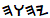

Exodus 20:25
(Commentary at end of page)


(JPS, '82) And if you make for Me an altar of stones, do not build it of hewn stones; for by wielding your tool upon them you have profaned them.
(JPS, '62) And if thou make Me an altar of stone, thou shalt not build it of hewn stones; for if thou lift up thy tool upon it, thou hast profaned it.
(TES) And if you will make me an altar of stone, you shall not build it of a cut stone; for if you lift up your tool upon it, you have polluted it:
(KJV ) And if thou wilt make me an altar of stone, thou shalt not build it of hewn stone: for if thou lift up thy tool upon it, thou hast polluted it.
(RSV) And if you make me an altar of stone, you shall not build it of hewn stones; for if you wield your tool upon it you profane it.
(NRSV) But if you make for me an altar of stone, do not build it of hewn stones; for if you use a chisel upon it you profane it.
(ASV.1) And if thou make me an altar of stone, thou shalt not build it of hewn stones; for if thou lift up thy tool upon it, thou hast polluted it.
(ASV.2) And if you make an altar of stones for me, you shall not build it of cut stones, for when you lift up your cutting tool upon it, then you defile it.
(NIV) If you make an altar of stones for me, do not build it with dressed stones, for you will defile it if you use a tool on it.
(Lamsa) And if you make me a stone altar, you shall not build it of hewn stones; for if you lift a tool of iron upon it, you will have polluted it.
(Bethel) And if you will make me an altar of stone, you shall not build it of a cut stone; for if you lift up your tool upon it, you have polluted it:
(Moffatt) If you build a stone altar, it must not be of dressed stones; for you will pollute the altar by taking a tool to it.
(Hendrickson) And if you make an altar of stone for Me, you shall not build them of cut stones. When you swing your tool on it, you defile it.
(JW) And if you should make an altar of stones for me, you must not build them as hewn stones. In the advent that you do weld your chisel upon it, then you will profane it.
So many translations, and so nearly the same, and others not here accounted for! Sense of time and order varies, according to the verb tense chosen for translation (there is only a general sense of tense in the original). English word choice for key phrases colors translation, here and there-- whether towards sternness or reasonableness, for example.
Why, then, do so many fuss about precise translation? They want to eliminate doubt, to establish a firm foundation from which to build. Translation, however, can take you only near the mark. In the end, it is the witness of the Spirit that confirms Truth; for the Holy Spirit is the Spirit of Truth. The original, liturgical Hebrew language is oracular, and speaks directly to the mind, free of verbal limitations; and the mind finds the right words for the moment. For most, the oracular Torah is the book that has been sealed. It was sealed on Earth by the ciphers of Ezra, and it is confirmed as unsealed by the discovery of the Dead Sea Scrolls, which returns the Hebrew scriptures to their original script. For some time on Earth (in fulfillment of what is known as "the effect of every vision." those seals are witnessed by contemporary man to be opening. The veils are being lifted. Wit this book and by this website, the consciousness of man is hereby provided with the Key of David: Adam Kadmon-- The Tree of Life-- scaled to the dimensions of Noah's Ark. When applied to the Shield of David, the Key displays the grid by which the Holy Language of Elohim is communicated to the Sons of Man. Reading thereby, there are countless books that would spring from Torah: should they be written, every one, the world would.
Quench not the spirit.
Yet, there are some who fear that no scripture is of any private interpretation, thereby limiting the interpretation of the individual.
The key word, here is ANY! For interpretations belong to , who gives of them freely, as needs and questions arise in the hearts and minds of supplicants.
I didn't cite Exodus 20:4-6, Torah's specific instruction concerning graven images, for a number of reasons. I will quote it, here, from the King James:
4 Thou shalt not make unto thee any graven image, or any likeness of any thing that is in heaven above, or that is in the earth beneath, or that is in the water under the earth: 5 Thou shalt not bow down thyself to them, nor serve them: for I thy God am a jealous God, visiting the iniquity of the fathers upon the children unto the third and fourth generation of them that hate me; 6 And showing mercy unto thousands of them that love me, and keep my commandments.
Do not make of Adam Kadmon what it is not. It's a pattern.
must be central to your thoughts. The pattern used by HaShem to create the worlds should have no greater influence in your meditations than does the usable vocabulary floating around in the mind, and probably a great deal less. When the Son shall make you free, you will be free, indeed.
Standing as the Son, you participate in the building of the temple made without hands. In it are the altar, the wash pans, the mercy seat: everything belonging to the spiritual Mishkan, which is Messiah. Every verse of Torah speaks to what is happening within you, within each of us. Every word locates dead center in each one of us. The highest interpretations are always those that apply to the individual human being as he is wooed and courted by his Maker. Do not construe an interpretation or an application: do not carve them out of the possibilities you see in your mind. Let carve them for you.
And there is no single correct interpretation. Good heavens! Can you imagine reading the eternal Torah forever if it means only one single thing? There is a translation appropriate for every question that comes to the mind of man.
O, the wings of are mighty and broad! Let us gather there in joy and learn. Nothing on these pages is more powerful than . The only threat, here, is from my incompetence.
These pages are freely given. Receive them in freedom.
|
site |
book |